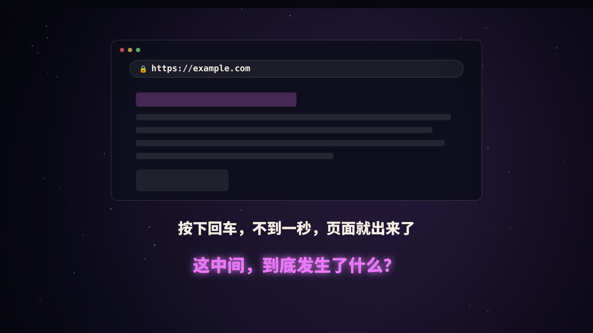
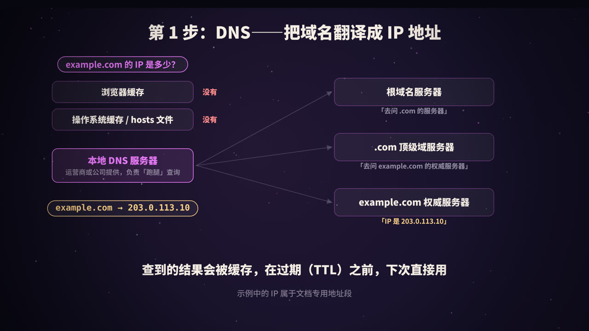
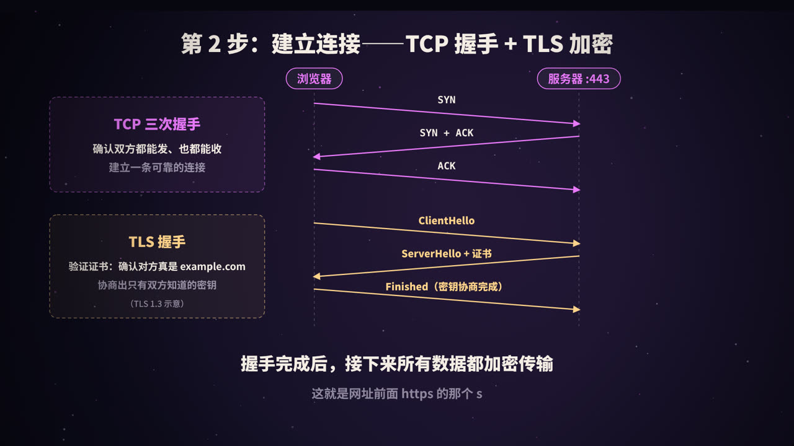
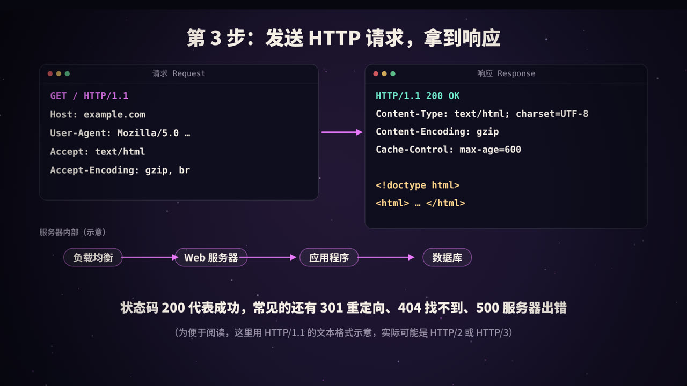
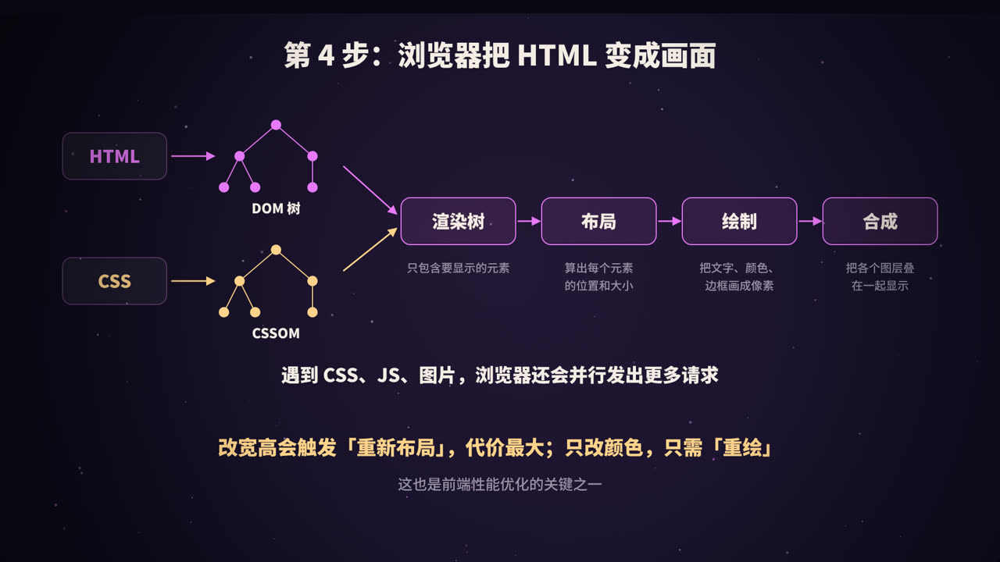
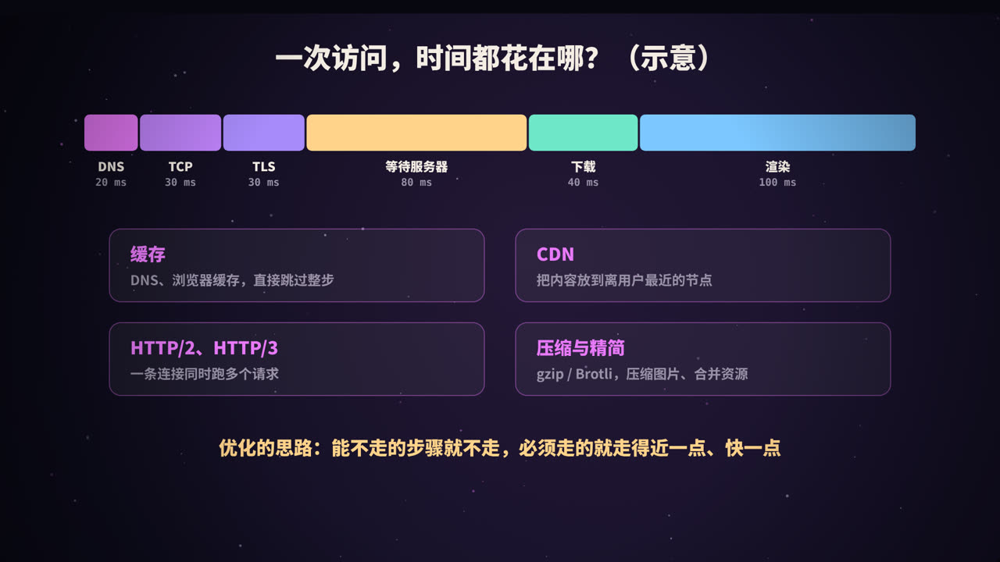
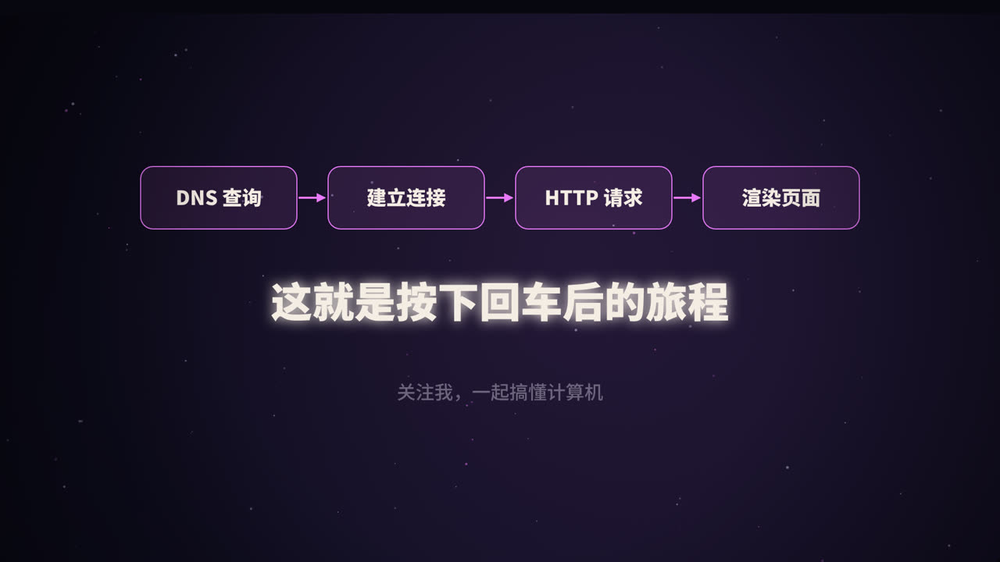

一道经典的面试题
「在浏览器地址栏输入网址并按下回车后，发生了什么？」这道题几乎是计算机方向面试的必考题，因为它能串起网络、操作系统、服务端和前端的大量知识。
按时间顺序，整个过程可以分成四大步：
| 步骤 | 做什么 | 主要涉及 |
|---|---|---|
| 1. DNS 解析 | 把域名翻译成 IP 地址 | DNS 协议、各级缓存 |
| 2. 建立连接 | 和服务器建立可靠、加密的通道 | TCP、TLS |
| 3. 请求与响应 | 发送 HTTP 请求，拿到 HTML | HTTP 协议、服务端架构 |
| 4. 渲染页面 | 把 HTML、CSS、JS 变成屏幕上的像素 | 浏览器渲染引擎 |
在这之前，浏览器还会先做一点准备工作：判断你输入的是网址还是搜索词；如果没写协议，就补上；如果这个网站之前声明过只允许 HTTPS 访问（HSTS），浏览器会直接改用 HTTPS。
第 1 步：DNS——把域名翻译成 IP

网络中的设备靠 IP 地址互相找到对方，而 example.com 这样的域名是为了方便人记忆。DNS（Domain Name System，域名系统）就是互联网的「电话簿」。
先查缓存
为了快，查询会先在各级缓存里找：
- 浏览器缓存：最近访问过的域名；
- 操作系统缓存和 hosts 文件；
- 以上都没有，才会去问本地 DNS 服务器（通常由运营商、公司网络或你手动设置的公共 DNS 提供）。
逐级查询
如果本地 DNS 服务器也没有缓存，它会替你跑一趟腿，从顶层开始逐级询问：
- 问根域名服务器：
example.com在哪？根服务器说：我不知道，但你可以去问负责.com的服务器； - 问 .com 顶级域服务器：它说：去问
example.com的权威服务器； - 问 example.com 的权威服务器：它给出最终答案，比如
203.0.113.10。
本地 DNS 服务器拿到结果后返回给你，并把结果缓存起来。
你问本地 DNS 服务器，它一次给你最终答案，这叫递归查询；本地 DNS 服务器向根、顶级域、权威服务器一级级地问，每次只得到「下一步去问谁」，这叫迭代查询。
几个常见概念
| 概念 | 说明 |
|---|---|
| A 记录 | 域名 → IPv4 地址 |
| AAAA 记录 | 域名 → IPv6 地址 |
| CNAME 记录 | 域名 → 另一个域名（别名），CDN 常用 |
| TTL | 记录可以被缓存多久，单位是秒 |
可以用 dig 命令亲自看看解析结果：
dig example.com A +short
本文和视频中的 IP
203.0.113.10属于专门用于文档示例的地址段，不对应真实网站。
第 2 步：建立连接——TCP 握手与 TLS 加密

TCP 三次握手
拿到 IP 后，浏览器要和服务器的 443 端口（HTTPS 默认端口）建立 TCP 连接。TCP 提供可靠传输：数据不丢、不乱序、不重复。建立连接前，双方先交换三次消息：
- 浏览器 → 服务器：
SYN（我想建立连接）； - 服务器 → 浏览器：
SYN + ACK（收到了，我也想建立连接）； - 浏览器 → 服务器：
ACK（收到你的了）。
三次之后，双方都确认了「我能发、你能收；你能发、我能收」。为什么不能是两次？这个问题在本系列的《TCP 三次握手》里会详细展开。
TLS 握手
HTTPS 就是在 TCP 之上，再加一层 TLS 加密。TLS 握手主要完成两件事：
- 验证身份：服务器出示证书，证书由受信任的证书颁发机构（CA）签发。浏览器会检查证书是否在有效期内、域名是否匹配、签名链能否追溯到系统信任的根证书。这一步防止你连上了冒充的网站。
- 协商密钥：双方通过密钥交换算法（如 ECDHE），在不安全的网络上协商出一个只有双方知道的会话密钥。之后的所有数据都用它加密。
TLS 1.3 把握手精简到了一个往返（1-RTT）；对于之前访问过的网站，还能借助会话恢复进一步减少延迟。
第 3 步：发送 HTTP 请求，拿到响应

请求长什么样
为了方便阅读，这里用 HTTP/1.1 的文本形式展示（HTTP/2 和 HTTP/3 在线路上是二进制格式，但语义是一样的）：
GET / HTTP/1.1
Host: example.com
User-Agent: Mozilla/5.0 …
Accept: text/html
Accept-Encoding: gzip, br
- 第一行是请求行：方法
GET、路径/、协议版本； - 后面是请求头：告诉服务器要访问哪个网站、浏览器是谁、能接受什么格式和压缩方式；
POST等请求还会有请求体，比如提交的表单数据。
响应长什么样
HTTP/1.1 200 OK
Content-Type: text/html; charset=UTF-8
Content-Encoding: gzip
Cache-Control: max-age=600
<!doctype html>
<html> … </html>
- 第一行是状态行，
200 OK表示成功； - 响应头说明内容类型、压缩方式、缓存策略等；
- 空行之后是响应体，也就是 HTML 正文。
常见的请求方法
| 方法 | 用途 |
|---|---|
| GET | 获取资源 |
| POST | 提交数据，创建资源 |
| PUT / PATCH | 整体 / 部分更新资源 |
| DELETE | 删除资源 |
常见的状态码
| 状态码 | 含义 |
|---|---|
| 200 | 成功 |
| 301 / 302 | 永久 / 临时重定向 |
| 304 | 资源没变，用你的缓存就行 |
| 400 | 请求有误 |
| 401 / 403 | 未登录 / 没有权限 |
| 404 | 找不到资源 |
| 500 | 服务器内部错误 |
| 502 / 504 | 网关收到无效响应 / 网关等待上游超时 |
服务器那边发生了什么
请求到达后，大型网站的内部通常还要经过好几层：
- 负载均衡：把请求分发到多台服务器中的一台；
- Web 服务器 / 反向代理（如 Nginx）：处理 HTTPS、静态文件、转发动态请求；
- 应用程序：执行业务逻辑；
- 缓存和数据库：读取数据，优先查缓存（如 Redis），没有再查数据库。
最后，应用程序生成 HTML，原路返回给浏览器。
HTTP 的几个版本
| 版本 | 特点 |
|---|---|
| HTTP/1.1 | 文本协议；支持长连接复用，但同一连接上的请求基本只能一个接一个处理 |
| HTTP/2 | 二进制分帧，多路复用：一条连接上同时跑多个请求；头部压缩 |
| HTTP/3 | 基于 QUIC（运行在 UDP 上），连接建立更快，丢包时不会阻塞其他请求 |
第 4 步：浏览器把 HTML 变成画面

拿到 HTML 后，浏览器的渲染引擎开始工作：
- 解析 HTML，构建 DOM 树：把标签变成一棵树形结构；
- 解析 CSS，构建 CSSOM：样式规则也组织成树；
- 合成渲染树：只保留需要显示的元素（
display: none的元素不在其中），并算出每个元素的最终样式； - 布局（Layout）：计算每个元素在页面上的位置和大小；
- 绘制（Paint）：把文字、颜色、边框、阴影等画成像素；
- 合成（Composite）：把页面分成的多个图层按顺序叠在一起，显示到屏幕上。
更多的请求
解析 HTML 的过程中，遇到 <link>、<script>、<img> 等标签，浏览器会并行发出更多请求去下载 CSS、JavaScript 和图片。
需要特别注意的是 JavaScript：普通的 <script> 会阻塞 HTML 的解析，因为脚本可能修改 DOM。所以：
- 用
defer：脚本并行下载，等 HTML 解析完再按顺序执行； - 用
async：脚本并行下载，下载完立刻执行，不保证顺序； - 或者把脚本放在
<body>末尾。
重排与重绘
页面加载完以后，JavaScript 修改了样式：
- 改变几何属性（宽、高、位置），需要重新布局，这叫重排（reflow），代价最高；
- 只改变外观（颜色、背景），跳过布局，只需重新绘制，叫重绘（repaint）；
- 只改
transform和opacity，通常连绘制都能跳过，直接在合成阶段处理，最适合做动画。
时间都花在哪：从每一步找优化空间

打开浏览器开发者工具的 Network（网络） 面板，点开任意一个请求的 Timing，就能看到 DNS、连接、TLS、等待服务器响应（TTFB）、下载各花了多少时间。
对应每一步，都有经典的优化手段：
| 环节 | 优化手段 |
|---|---|
| DNS | DNS 缓存；<link rel="dns-prefetch"> 提前解析 |
| 连接 | 连接复用；<link rel="preconnect"> 提前建立连接；TLS 1.3、会话恢复 |
| 距离 | CDN，把静态内容放到离用户最近的节点 |
| 服务器 | 缓存热点数据、优化慢查询，降低 TTFB |
| 传输 | gzip / Brotli 压缩；图片用 WebP、AVIF 等现代格式；HTTP/2、HTTP/3 |
| 缓存 | 合理设置 Cache-Control、ETag，让重复访问几乎不走网络 |
| 渲染 | 关键 CSS 内联；脚本 defer；减少重排；图片懒加载 |
衡量用户体验时，常用的指标包括 TTFB（首字节时间）、FCP（首次内容绘制）和 LCP（最大内容绘制）等。
用 curl 亲眼看看
curl -v 会把整个过程打印出来，包括 DNS 解析出的 IP、TLS 握手、请求头和响应头：
curl -v https://example.com -o /dev/null
以 > 开头的是发出的请求头，以 < 开头的是收到的响应头。
总结

- DNS：域名 → IP，层层缓存，逐级查询；
- TCP + TLS：三次握手建立可靠连接，TLS 验证证书、协商密钥，保证安全；
- HTTP：请求行、头、体；响应的状态码和头部决定了浏览器下一步怎么做；
- 渲染：DOM + CSSOM → 渲染树 → 布局 → 绘制 → 合成；
- 优化：能不走的步骤就不走（缓存），必须走的走得近一点（CDN）、快一点（压缩、新协议）。
参考资料
- RFC 1034 / 1035：Domain Names.
- RFC 9293：Transmission Control Protocol (TCP).
- RFC 8446：The Transport Layer Security (TLS) Protocol Version 1.3.
- RFC 9110：HTTP Semantics；RFC 9113：HTTP/2；RFC 9114：HTTP/3.
- RFC 5737：IPv4 Address Blocks Reserved for Documentation.
- MDN Web Docs：How browsers work；Critical rendering path.